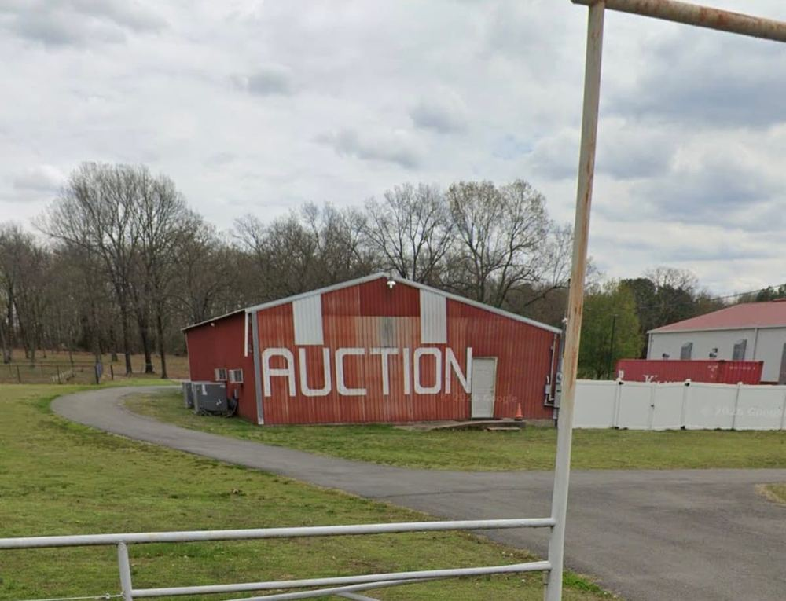
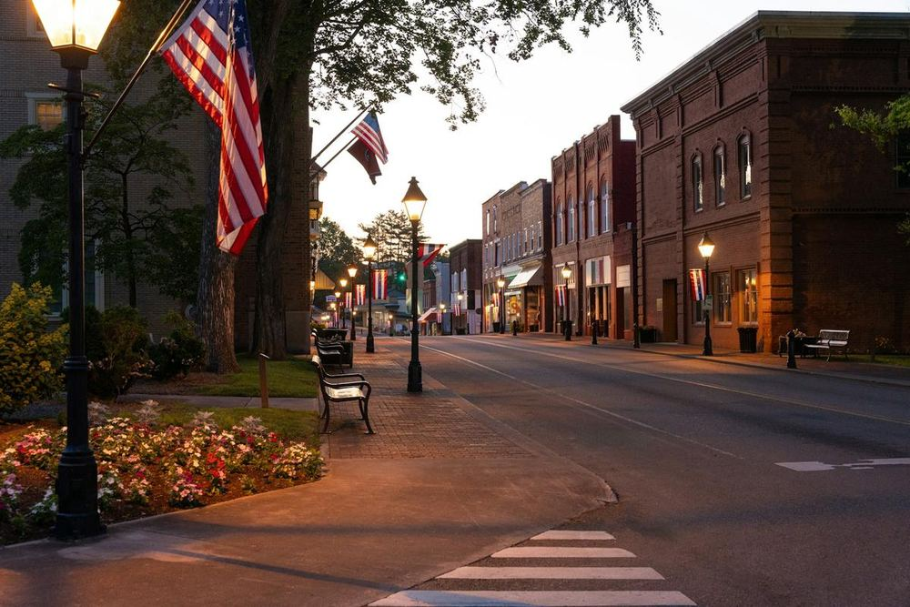
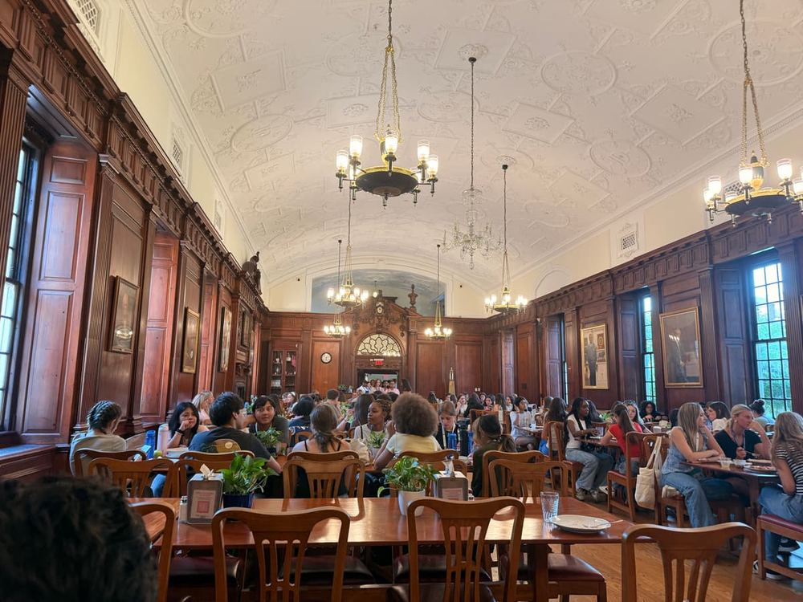
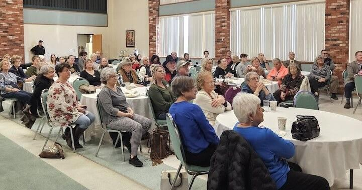

Writing
Columns &
commentary by Luke H. Johnson
23 columns, plus features and press, carried in 31 newspapers and outlets.
-
Column
What the Next Governor Owes Oklahoma's Kids
The priorities in education, technology, and economic opportunity that incoming Governor Mike Mazzei should take up for Oklahoma's students.
Ran in Enid News & Eagle.
-
Column
Test Score Shouldn't Determine Kid's Whole Year
A critique of the retention mandate in Oklahoma's Strong Readers Act, arguing that a single timed test score should not hold back thousands of third graders.
Ran in Allied News.
-
Column
What Veterans Day Means When You're Fifteen
Looking past a day off from school to what military service and sacrifice mean to a teenager today.
Ran in Northeastern Journal.
-
Column
If You've Been There for Years, Where Is the Change?
A call for voters to measure long-serving incumbents by their actual legislative records rather than by repeated campaign promises of "big change."
Ran in Northeastern Journal.
-
Column
What Oklahoma Almost Had
A reflection on Oklahoma's November 2026 election results and the competing visions for the state's future that were decided on Election Night.
Ran in Northeastern Journal.

-
Column
I Cannot Vote Yet, But This Election Is Already About Me
An op-ed written from the perspective of a 15-year-old student on how the policy decisions made in a major election shape the future, education, and daily lives of America's young people — even though they are not yet old enough to cast a ballot.
Ran in Tulsa World.

-
Column
Are We Happy With Where We Are?
An appeal to Oklahomans across party lines to step back from partisan labels and honestly ask whether the country is heading in the right direction.
Ran in CNHI News Service, Tahlequah Daily Press, The Huntsville Item.
-
Column
Shame On You, Cornell
A critique of Cornell University's institutional response to campus sexual assault allegations following the 2024 Chi Phi fraternity incident.
Ran in Northeastern Journal.
-
Column
Inherited Certainty
A challenge to question the political and cultural beliefs handed down to us rather than accepting inherited viewpoints uncritically.
Ran in Northeastern Journal.
-
Column
Six Flock Cameras in Tahlequah Too Many
A column on the six Flock Safety license-plate readers now watching the roads into Tahlequah — and on what it means when the surveillance a teenager once thought of as a big-city problem turns up two minutes from his house.
Ran in Tahlequah Daily Press, CNHI News Service.
-
Column
The Strange Experience of Outgrowing Yourself
On the realization of maturing quickly and growing past earlier versions of your own identity and perspective.
Ran in Northeastern Journal.
-
Column
On Being Someone's Twin
Growing up alongside his twin brother, Jaren, and pushing past the stereotypes that treat twins as a matched set rather than two distinct people.
Ran in Northeastern Journal.
-
Column
Nobody's Asking Us
How political decisions are routinely made about young people without inviting them into the conversation.
Ran in Northeastern Journal.

-
Column
A Week at Yale With Community's Help
A column about the week Luke spent at Yale's National Youth Leadership Forum on Medicine and Health Care — suturing, phlebotomy, triage, emergency medicine, and neurology alongside students from across the country — and about the Tahlequah community that helped make the trip possible.
Ran in Tahlequah Daily Press, Muskogee Phoenix, Northeastern Journal, Stilwell Democrat Journal, Enid News & Eagle, The Duncan Banner, Allied News, Ada News, Woodward News, CNHI News Service.

-
Nationally Syndicated Column
The Cost of Growing Up Online
A nationally distributed column examining technology, social media, identity, online culture, and the long-term effects of growing up in a permanently connected world.
Ran in Tahlequah Daily Press, The Tribune-Democrat, The Register-Herald, The Huntsville Item, Pharos-Tribune, Effingham Daily News, Yahoo Life, The Herald / Sharon Herald, Norman Transcript, New Castle News.
-
Feature
Students Grow, Evolve in a Digital World
A national roundtable feature where Luke participated in a discussion about teenagers, technology, and growing up with screens.
Ran in CNHI News Service, News and Tribune, The Herald Bulletin, The Huntsville Item, Tahlequah Daily Press, Yahoo Life.
-
Column
Reactions to Student Protests Discouraging
A column discussing public reactions to student activism, civic engagement, and youth participation in political and social issues.
Ran in Tahlequah Daily Press, Muskogee Phoenix, The Huntsville Item.
-
Column
The Pressure Teens Carry in Today's World
A column examining mental health, expectations, social pressure, academics, technology, and the realities many teenagers face today.
Ran in Tahlequah Daily Press, The Express-Star, Muskogee Phoenix, The Daily Star, Ada News, The Lebanon Reporter, The Huntsville Item.
-
Column
Education Needs Balance, Not Bans
A column discussing education policy, censorship concerns, classroom balance, and the role of students within modern education debates.
Ran in Tahlequah Daily Press, Muskogee Phoenix, Enid News & Eagle, Stilwell Democrat Journal, Norman Transcript, Pauls Valley Democrat, Ada News, McAlester News-Capital, The Duncan Banner, Stillwater News Press, The Express-Star.
-
Column
Politics Isn't Just for Adults
Why teenagers tune out of politics when adults treat civic life like an exclusive club with an age requirement — and why the issues affect them anyway.
Ran in Tahlequah Daily Press, Muskogee Phoenix, Ada News, Gainesville Register, Weatherford Democrat.
-
Feature / Speaking
Statehouse Session: Education One of Top Concerns at Legislative Forum
Coverage of Luke asking questions at a legislative forum about education, teacher engagement, state testing, and issues affecting students.
Ran in Tahlequah Daily Press, Yahoo Life.

-
Column
We've Forgotten How to Disagree
Ran in Northeastern Journal.
-
Column
The Future Feels Different Now
Ran in Northeastern Journal.
-
Column
Coming of Age During a War Nobody Declared
Ran in Northeastern Journal.
-
Column
Rural, Young, and Politically Homeless
Ran in Northeastern Journal.
Nothing matches that search.
Where it has run
Oklahoma14
- Tahlequah Daily Press Tahlequah
- Tulsa World Tulsa
- Northeastern Journal Tahlequah
- Muskogee Phoenix Muskogee
- Enid News & Eagle Enid
- Stilwell Democrat Journal Stilwell
- Norman Transcript Norman
- Pauls Valley Democrat Pauls Valley
- Ada News Ada
- McAlester News-Capital McAlester
- The Duncan Banner Duncan
- Stillwater News Press Stillwater
- The Express-Star Chickasha
- Woodward News Woodward
National1
- Yahoo Life Media Outlet
Indiana4
- Pharos-Tribune Logansport
- News and Tribune Jeffersonville
- The Herald Bulletin Anderson
- The Lebanon Reporter Lebanon
Pennsylvania4
- The Tribune-Democrat Johnstown
- The Herald / Sharon Herald Sharon
- Allied News Grove City
- New Castle News New Castle
Texas4
- The Huntsville Item Huntsville
- Cleburne Times-Review Cleburne
- Weatherford Democrat Weatherford
- Gainesville Register Gainesville
New York2
- The Daily Star Oneonta
- Press-Republican Plattsburgh
Illinois1
- Effingham Daily News Effingham
West Virginia1
- The Register-Herald Beckley